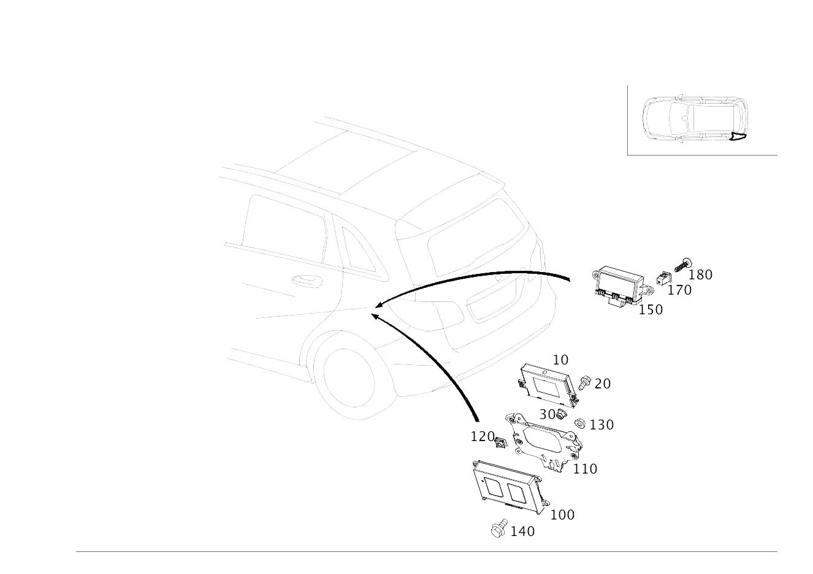

| № | Артикул | Название | Кол. | Примечание | Ограничение |
|---|---|---|---|---|---|
| 10 | A 212 900 38 06 | Блок управления (CONTROL UNIT) | 1 | ДОПОЛНИТЕЛЬНЫЕ ФУНКЦИИ СПЕЦ. АВТОМОБИЛЕЙ [672] ДЕТАЛЬ ПОСЛЕ УСТАН.ПРОВЕРИТЬ НА АКТУАЛЬНОСТЬ "ПРОШИВНОГО" ПО | 965/Z90/Z97 |
| 10 | A 212 900 00 29 | Блок управления (CONTROL UNIT) | 1 | ДОПОЛНИТЕЛЬНЫЕ ФУНКЦИИ СПЕЦ. АВТОМОБИЛЕЙ [672] ДЕТАЛЬ ПОСЛЕ УСТАН.ПРОВЕРИТЬ НА АКТУАЛЬНОСТЬ "ПРОШИВНОГО" ПО [697] ДЕТАЛЬ ПОСТАВЛЯЕТСЯ ТОЛЬКО/ИЛИ ТАКЖЕ КАК ЗАП.ЧАСТЬ | 965/Z90/Z97 |
| 20 | N 910105 006023 | Винт с 6-гранной головкой (HEXAGON HEAD BOLT) | 2 | КРЕПЛЕНИЕ БЛОКА УПРАВЛЕНИЯ; M6X16 | (803/804/805/806)+(965/Z90/Z97) |
| 20 | N 910105 010009 | Винт с 6-гранной головкой (HEXAGON HEAD BOLT) | 1 | КРЕПЛЕНИЕ БЛОКА УПРАВЛЕНИЯ; M10X25 Рулевое управление: Влево | (807/808/809/800/801)+(965/Z90/Z97) |
| 30 | N 000000 008270 | Гайка (NUT) | 1 | КРЕПЛЕНИЕ БЛОКА УПРАВЛЕНИЯ; M10 Рулевое управление: Влево | (807/808/809/800)+(965/Z90/Z97) |
| 100 | A 222 900 60 03 | Блок управления (CONTROL UNIT) | 1 | СИСТЕМА АВАРИЙНОГО ВЫЗОВА [672] ДЕТАЛЬ ПОСЛЕ УСТАН.ПРОВЕРИТЬ НА АКТУАЛЬНОСТЬ "ПРОШИВНОГО" ПО [697] ДЕТАЛЬ ПОСТАВЛЯЕТСЯ ТОЛЬКО/ИЛИ ТАКЖЕ КАК ЗАП.ЧАСТЬ | (804/805+-055)+348+460 |
| 100 | A 217 900 26 00 | Блок управления (CONTROL UNIT) | 1 | СИСТЕМА АВАРИЙНОГО ВЫЗОВА [672] ДЕТАЛЬ ПОСЛЕ УСТАН.ПРОВЕРИТЬ НА АКТУАЛЬНОСТЬ "ПРОШИВНОГО" ПО [697] ДЕТАЛЬ ПОСТАВЛЯЕТСЯ ТОЛЬКО/ИЛИ ТАКЖЕ КАК ЗАП.ЧАСТЬ | (805+055/806)+348+460 |
| 100 | A 217 900 43 01 | Блок управления (CONTROL UNIT) | 1 | СИСТЕМА АВАРИЙНОГО ВЫЗОВА [672] ДЕТАЛЬ ПОСЛЕ УСТАН.ПРОВЕРИТЬ НА АКТУАЛЬНОСТЬ "ПРОШИВНОГО" ПО | (805+055/806)+348+460+531 |
| 100 | A 253 900 46 00 | Блок управления (CONTROL UNIT) | 1 | СИСТЕМА АВАРИЙНОГО ВЫЗОВА [672] ДЕТАЛЬ ПОСЛЕ УСТАН.ПРОВЕРИТЬ НА АКТУАЛЬНОСТЬ "ПРОШИВНОГО" ПО [697] ДЕТАЛЬ ПОСТАВЛЯЕТСЯ ТОЛЬКО/ИЛИ ТАКЖЕ КАК ЗАП.ЧАСТЬ | (805+055/806+-140)+348+830 |
| 100 | A 253 900 47 00 | Блок управления (CONTROL UNIT) | 1 | СИСТЕМА АВАРИЙНОГО ВЫЗОВА [672] ДЕТАЛЬ ПОСЛЕ УСТАН.ПРОВЕРИТЬ НА АКТУАЛЬНОСТЬ "ПРОШИВНОГО" ПО [697] ДЕТАЛЬ ПОСТАВЛЯЕТСЯ ТОЛЬКО/ИЛИ ТАКЖЕ КАК ЗАП.ЧАСТЬ | (805+055/806+-140)+348+830+531 |
| 100 | A 253 900 46 00 | Блок управления (CONTROL UNIT) | 1 | СИСТЕМА АВАРИЙНОГО ВЫЗОВА [672] ДЕТАЛЬ ПОСЛЕ УСТАН.ПРОВЕРИТЬ НА АКТУАЛЬНОСТЬ "ПРОШИВНОГО" ПО [697] ДЕТАЛЬ ПОСТАВЛЯЕТСЯ ТОЛЬКО/ИЛИ ТАКЖЕ КАК ЗАП.ЧАСТЬ | (806+140/807/808/809/800/801)+348+830 |
| 100 | A 253 900 47 00 | Блок управления (CONTROL UNIT) | 1 | СИСТЕМА АВАРИЙНОГО ВЫЗОВА [672] ДЕТАЛЬ ПОСЛЕ УСТАН.ПРОВЕРИТЬ НА АКТУАЛЬНОСТЬ "ПРОШИВНОГО" ПО [697] ДЕТАЛЬ ПОСТАВЛЯЕТСЯ ТОЛЬКО/ИЛИ ТАКЖЕ КАК ЗАП.ЧАСТЬ | (806+140/807/808/809/800/801)+348+830+531 |
| 110 | A 246 545 04 00 | Держатель (HOLDER) | 1 | КРЕПЛЕНИЕ БЛОКА УПРАВЛЕНИЯ | (802/803/804/805/806)+(965/Z90/Z97) |
| 110 | A 246 545 18 00 | Держатель (HOLDER) | 1 | КРЕПЛЕНИЕ БЛОКА УПРАВЛЕНИЯ Рулевое управление: Влево | (807/808/809)+(965/Z90/Z97) |
| 110 | A 246 540 23 03 | Держатель (HOLDER) | 1 | КРЕПЛЕНИЕ БЛОКА УПРАВЛЕНИЯ | 348 |
| 110 | A 246 545 10 00 | Держатель (HOLDER) | 1 | КРЕПЛЕНИЕ БЛОКА УПРАВЛЕНИЯ | (807/808/809/800)+(360/362) |
| 120 | A 004 994 14 45 | SPRING NUT (SPRING LOCK NUT) | 2 | КРЕПЛЕНИЕ КРОНШТЕЙНА; M6 | 965/Z97 |
| 130 | A 000 990 43 37 | Шестигранная гайка (HEXAGON NUT) | 3 | ДЕРЖАТЕЛЬ НА КОЛЕСН. АРКЕ СЛЕВА; M6 | 348/965/Z90/Z97/(360/362)+(807/808/809/800) |
| 140 | N 910105 005000 | Винт с 6-гранной головкой (HEXAGON HEAD BOLT) | 4 | КРЕПЛЕНИЕ БЛОКА УПРАВЛЕНИЯ; M5X12 | (802/803/804/805/806)+348 |
| 150 | A 246 900 53 12 | Блок управления (CONTROL UNIT) | 1 | ПОЛНЫЙ ПРИВОД [672] ДЕТАЛЬ ПОСЛЕ УСТАН.ПРОВЕРИТЬ НА АКТУАЛЬНОСТЬ "ПРОШИВНОГО" ПО | (802/803/804/805/806+-140)+M005+-M133 |
| 150 | A 246 900 81 15 | Блок управления (CONTROL UNIT) | 1 | ПОЛНЫЙ ПРИВОД [672] ДЕТАЛЬ ПОСЛЕ УСТАН.ПРОВЕРИТЬ НА АКТУАЛЬНОСТЬ "ПРОШИВНОГО" ПО [697] ДЕТАЛЬ ПОСТАВЛЯЕТСЯ ТОЛЬКО/ИЛИ ТАКЖЕ КАК ЗАП.ЧАСТЬ | (806+140/807/808/809)+(M005/M005+482)+-M133 |
| 150 | A 246 900 81 15 | Блок управления (CONTROL UNIT) | 1 | ПОЛНЫЙ ПРИВОД [672] ДЕТАЛЬ ПОСЛЕ УСТАН.ПРОВЕРИТЬ НА АКТУАЛЬНОСТЬ "ПРОШИВНОГО" ПО [697] ДЕТАЛЬ ПОСТАВЛЯЕТСЯ ТОЛЬКО/ИЛИ ТАКЖЕ КАК ЗАП.ЧАСТЬ | (807/808/809/800/801)+M005+-M133 |
| 150 | A 246 900 69 18 | Блок управления (CONTROL UNIT) | 1 | ПОЛНЫЙ ПРИВОД [672] ДЕТАЛЬ ПОСЛЕ УСТАН.ПРОВЕРИТЬ НА АКТУАЛЬНОСТЬ "ПРОШИВНОГО" ПО [697] ДЕТАЛЬ ПОСТАВЛЯЕТСЯ ТОЛЬКО/ИЛИ ТАКЖЕ КАК ЗАП.ЧАСТЬ | (807/808/809/800/801)+(M005+195/M005+M133+195) |
| 170 | N 910112 005000 | Шестигранная гайка (HEXAGON NUT) | 2 | КРЕПЛЕНИЕ БЛОКА УПРАВЛЕНИЯ; M5 | (805+055/806/807/808/809/800)+M005+889 |
| 170 | A 000 998 33 85 | Закладная гайка (SPREADER NUT) | 2 | КРЕПЛЕНИЕ БЛОКА УПРАВЛЕНИЯ | M005 |
| 180 | A 006 990 10 12 | Винт со полукругл.головой (PAN HEAD SCREW W COLLAR) | 2 | КРЕПЛЕНИЕ БЛОКА УПРАВЛЕНИЯ | M005 |
| 300 | A 000 900 01 04 | Блок управления (CONTROL UNIT) | 1 | ТОПЛИВНЫЙ N118 [672] ДЕТАЛЬ ПОСЛЕ УСТАН.ПРОВЕРИТЬ НА АКТУАЛЬНОСТЬ "ПРОШИВНОГО" ПО | (802/803/804/805/806+-140)+(M607/M651/M270+(M005/929/933)/M133) |
| 300 | A 000 900 73 06 | Блок управления (CONTROL UNIT) | 1 | ТОПЛИВНЫЙ N118 [672] ДЕТАЛЬ ПОСЛЕ УСТАН.ПРОВЕРИТЬ НА АКТУАЛЬНОСТЬ "ПРОШИВНОГО" ПО | (802/803/804/805/806+-140)+(M607/M651/M270+(M005/929/933)/M133) |
| 300 | A 000 900 62 07 | Блок управления (CONTROL UNIT) | 1 | ТОПЛИВНЫЙ N118 [672] ДЕТАЛЬ ПОСЛЕ УСТАН.ПРОВЕРИТЬ НА АКТУАЛЬНОСТЬ "ПРОШИВНОГО" ПО [697] ДЕТАЛЬ ПОСТАВЛЯЕТСЯ ТОЛЬКО/ИЛИ ТАКЖЕ КАК ЗАП.ЧАСТЬ | (806+140/807/808/809)+(M607/M651/M270+(M005/929/933)/M133) |
| 300 | A 000 900 25 18 | Блок управления (CONTROL UNIT) | 1 | ТОПЛИВНЫЙ N118 [672] ДЕТАЛЬ ПОСЛЕ УСТАН.ПРОВЕРИТЬ НА АКТУАЛЬНОСТЬ "ПРОШИВНОГО" ПО | (800/801/945)+(M651/M607/M270+(M005/929/933)/M133) |
| 310 | A 246 545 37 40 | Держатель (HOLDER) | 1 | БЛОК УПРАВЛЕНИЯ | -M133 |
| 350 | A 246 900 55 01 | Блок управления (CONTROL UNIT) | 1 | ТЯГОВО\-СЦЕПНОЕ УСТРОЙСТВО N28/1 [672] ДЕТАЛЬ ПОСЛЕ УСТАН.ПРОВЕРИТЬ НА АКТУАЛЬНОСТЬ "ПРОШИВНОГО" ПО [697] ДЕТАЛЬ ПОСТАВЛЯЕТСЯ ТОЛЬКО/ИЛИ ТАКЖЕ КАК ЗАП.ЧАСТЬ | 550+(801/802/803/804/805+-055) |
| 350 | A 246 900 32 14 | Блок управления (CONTROL UNIT) | 1 | ТЯГОВО\-СЦЕПНОЕ УСТРОЙСТВО N28/1 [672] ДЕТАЛЬ ПОСЛЕ УСТАН.ПРОВЕРИТЬ НА АКТУАЛЬНОСТЬ "ПРОШИВНОГО" ПО | (805+055/806)+550 |
| 350 | A 246 900 42 16 | Блок управления (CONTROL UNIT) | 1 | ТЯГОВО\-СЦЕПНОЕ УСТРОЙСТВО N28/1 [672] ДЕТАЛЬ ПОСЛЕ УСТАН.ПРОВЕРИТЬ НА АКТУАЛЬНОСТЬ "ПРОШИВНОГО" ПО | 807+550 |
| 350 | A 246 900 35 18 | Блок управления (CONTROL UNIT) | 1 | ТЯГОВО\-СЦЕПНОЕ УСТРОЙСТВО N28/1 [672] ДЕТАЛЬ ПОСЛЕ УСТАН.ПРОВЕРИТЬ НА АКТУАЛЬНОСТЬ "ПРОШИВНОГО" ПО [697] ДЕТАЛЬ ПОСТАВЛЯЕТСЯ ТОЛЬКО/ИЛИ ТАКЖЕ КАК ЗАП.ЧАСТЬ | (808/809/800)+550 |
| 360 | A 000 990 36 62 | Пластмассовая гайка (PLASTIC NUT) | 2 | КРЕПЛЕНИЕ БЛОКА УПРАВЛЕНИЯ | 550 |
| 370 | A 246 900 82 13 | Блок управления (CONTROL UNIT) | 1 | УСИЛИТЕЛЬ АУДИО\-СИСТЕМЫ [672] ДЕТАЛЬ ПОСЛЕ УСТАН.ПРОВЕРИТЬ НА АКТУАЛЬНОСТЬ "ПРОШИВНОГО" ПО [697] ДЕТАЛЬ ПОСТАВЛЯЕТСЯ ТОЛЬКО/ИЛИ ТАКЖЕ КАК ЗАП.ЧАСТЬ | (802/803/804/FT+805+-055/FS+(805/806+-140))+810 |
| 370 | A 246 900 43 16 | Блок управления (CONTROL UNIT) | 1 | УСИЛИТЕЛЬ АУДИО\-СИСТЕМЫ [672] ДЕТАЛЬ ПОСЛЕ УСТАН.ПРОВЕРИТЬ НА АКТУАЛЬНОСТЬ "ПРОШИВНОГО" ПО [697] ДЕТАЛЬ ПОСТАВЛЯЕТСЯ ТОЛЬКО/ИЛИ ТАКЖЕ КАК ЗАП.ЧАСТЬ | 802/803/804/805+-055 |
| 370 | A 218 900 51 05 | Блок управления (CONTROL UNIT) | 1 | УСИЛИТЕЛЬ АУДИО\-СИСТЕМЫ [672] ДЕТАЛЬ ПОСЛЕ УСТАН.ПРОВЕРИТЬ НА АКТУАЛЬНОСТЬ "ПРОШИВНОГО" ПО | 810+805+055 |
| 370 | A 218 900 76 05 | Блок управления (CONTROL UNIT) | 1 | УСИЛИТЕЛЬ АУДИО\-СИСТЕМЫ [672] ДЕТАЛЬ ПОСЛЕ УСТАН.ПРОВЕРИТЬ НА АКТУАЛЬНОСТЬ "ПРОШИВНОГО" ПО | 810+805+055 |
| 370 | A 218 900 02 06 | Блок управления (CONTROL UNIT) | 1 | УСИЛИТЕЛЬ АУДИО\-СИСТЕМЫ [672] ДЕТАЛЬ ПОСЛЕ УСТАН.ПРОВЕРИТЬ НА АКТУАЛЬНОСТЬ "ПРОШИВНОГО" ПО | (805+055/806/807/808/809/800)+810 |
| 370 | A 218 900 68 06 | Блок управления (CONTROL UNIT) | 1 | УСИЛИТЕЛЬ АУДИО\-СИСТЕМЫ [672] ДЕТАЛЬ ПОСЛЕ УСТАН.ПРОВЕРИТЬ НА АКТУАЛЬНОСТЬ "ПРОШИВНОГО" ПО | (805+055/806/807/808/809/800)+810 |
| 370 | A 218 900 41 07 | Блок управления (CONTROL UNIT) | 1 | УСИЛИТЕЛЬ АУДИО\-СИСТЕМЫ [672] ДЕТАЛЬ ПОСЛЕ УСТАН.ПРОВЕРИТЬ НА АКТУАЛЬНОСТЬ "ПРОШИВНОГО" ПО | (805+055/806/807/808/809/800)+810 |
| 370 | A 218 900 72 07 | Блок управления (CONTROL UNIT) | 1 | УСИЛИТЕЛЬ АУДИО\-СИСТЕМЫ [672] ДЕТАЛЬ ПОСЛЕ УСТАН.ПРОВЕРИТЬ НА АКТУАЛЬНОСТЬ "ПРОШИВНОГО" ПО | (805+055/806/807/808/809/800)+810 |
| 380 | N 000000 004011 | ГАЙКА КОМБИНИРОВАННАЯ (NUT-AND-WASHER ASSEMBLY) | 2 | КРЕПЛЕНИЕ БЛОКА УПРАВЛЕНИЯ; M6 | 810 |
| 380 | A 000 990 43 37 | Шестигранная гайка (HEXAGON NUT) | 4 | КРЕПЛЕНИЕ БУ НА ДЕРЖАТ.; M6 | 810 |
| 400 | A 246 545 00 40 | Держатель (HOLDER) | 1 | ЗАДНЯЯ ЧАСТЬ КУЗОВА СПРАВА | (803/804/805+-055)+(536/537/228/B24/(536/537)+(228/B24)) |
| 400 | A 246 540 13 40 | Держатель (HOLDER) | 1 | ЗАДНЯЯ ЧАСТЬ КУЗОВА СПРАВА | (805+055/806)+(536/537/B24/865/(536/537/865)+B24/78O) |
| 400 | A 246 545 11 00 | Держатель (HOLDER) | 1 | ЗАДНЯЯ ЧАСТЬ КУЗОВА СПРАВА | (807/808/809/800)+(536/537/78O/865/B24/386) |
| 410 | A 000 990 43 37 | Шестигранная гайка (HEXAGON NUT) | 3 | КРОНШТЕЙН К ОСТОВУ КУЗОВА; M6 | (802/803/804/805/806)+(228/536/537/B24) |
| 410 | A 000 990 43 37 | Шестигранная гайка (HEXAGON NUT) | 3 | КРОНШТЕЙН К ОСТОВУ КУЗОВА; M6 | (807/808/809/800)+(536/537/865/78O/B24/Z97/386) |
| 450 | A 166 900 34 07 | Блок управления (CONTROL UNIT) | 1 | СПУТНИКОВОЕ РАДИО N87/3 [672] ДЕТАЛЬ ПОСЛЕ УСТАН.ПРОВЕРИТЬ НА АКТУАЛЬНОСТЬ "ПРОШИВНОГО" ПО | (802/803/804/FT+805+-055/FS+(805/806+-140)/FX+805)+537 |
| 450 | A 166 900 95 13 | Блок управления (CONTROL UNIT) | 1 | СПУТНИКОВОЕ РАДИО N87/3 [672] ДЕТАЛЬ ПОСЛЕ УСТАН.ПРОВЕРИТЬ НА АКТУАЛЬНОСТЬ "ПРОШИВНОГО" ПО | (802/803/804/FT+805+-055/FS+(805/806+-140)/FX+805)+537 |
| 450 | A 222 900 97 10 | Блок управления (CONTROL UNIT) | 1 | СПУТНИКОВОЕ РАДИО N87/3 [672] ДЕТАЛЬ ПОСЛЕ УСТАН.ПРОВЕРИТЬ НА АКТУАЛЬНОСТЬ "ПРОШИВНОГО" ПО | (805+055/806/807/808/809/800)+537 |
| 450 | A 222 900 27 10 | Блок управления (CONTROL UNIT) | 1 | СПУТНИКОВОЕ РАДИО N87/3 [672] ДЕТАЛЬ ПОСЛЕ УСТАН.ПРОВЕРИТЬ НА АКТУАЛЬНОСТЬ "ПРОШИВНОГО" ПО | (805+055/806/807/808/809/800)+537 |
| 450 | A 222 900 92 11 | Блок управления (CONTROL UNIT) | 1 | СПУТНИКОВОЕ РАДИО N87/3 [672] ДЕТАЛЬ ПОСЛЕ УСТАН.ПРОВЕРИТЬ НА АКТУАЛЬНОСТЬ "ПРОШИВНОГО" ПО | (805+055/806/807/808/809/800)+537 |
| 450 | A 222 900 51 17 | Блок управления (CONTROL UNIT) | 1 | СПУТНИКОВОЕ РАДИО N87/3 [672] ДЕТАЛЬ ПОСЛЕ УСТАН.ПРОВЕРИТЬ НА АКТУАЛЬНОСТЬ "ПРОШИВНОГО" ПО [697] ДЕТАЛЬ ПОСТАВЛЯЕТСЯ ТОЛЬКО/ИЛИ ТАКЖЕ КАК ЗАП.ЧАСТЬ | (805+055/806/807/808/809/800)+537 |
| 450 | A 166 900 76 16 | Блок управления (CONTROL UNIT) | 1 | СПУТНИКОВОЕ РАДИО N87/3 [672] ДЕТАЛЬ ПОСЛЕ УСТАН.ПРОВЕРИТЬ НА АКТУАЛЬНОСТЬ "ПРОШИВНОГО" ПО [697] ДЕТАЛЬ ПОСТАВЛЯЕТСЯ ТОЛЬКО/ИЛИ ТАКЖЕ КАК ЗАП.ЧАСТЬ [402] БОЛЬШЕ НЕ ПОСТАВЛЯЕТСЯ | (802/803/804/FT+805+-055/FS+(805/806+-140)/FX+805)+537 |
| 450 | A 212 870 55 89 | Приемник SDARS (RECEIVER, SDARS) | 1 | СПУТНИКОВОЕ РАДИО N87/3 [672] ДЕТАЛЬ ПОСЛЕ УСТАН.ПРОВЕРИТЬ НА АКТУАЛЬНОСТЬ "ПРОШИВНОГО" ПО | (802/803)+536 |
| 450 | A 212 870 58 89 | Приемник SDARS (RECEIVER, SDARS) | 1 | СПУТНИКОВОЕ РАДИО N87/3 [672] ДЕТАЛЬ ПОСЛЕ УСТАН.ПРОВЕРИТЬ НА АКТУАЛЬНОСТЬ "ПРОШИВНОГО" ПО | (802/803/804/805+-055)+536 |
| 450 | A 222 900 86 10 | Блок управления (CONTROL UNIT) | 1 | СПУТНИКОВОЕ РАДИО N87/3 [672] ДЕТАЛЬ ПОСЛЕ УСТАН.ПРОВЕРИТЬ НА АКТУАЛЬНОСТЬ "ПРОШИВНОГО" ПО | (805+055/806)+536 |
| 450 | A 222 900 50 11 | Блок управления (CONTROL UNIT) | 1 | СПУТНИКОВОЕ РАДИО N87/3 [672] ДЕТАЛЬ ПОСЛЕ УСТАН.ПРОВЕРИТЬ НА АКТУАЛЬНОСТЬ "ПРОШИВНОГО" ПО [697] ДЕТАЛЬ ПОСТАВЛЯЕТСЯ ТОЛЬКО/ИЛИ ТАКЖЕ КАК ЗАП.ЧАСТЬ | (805+055/806/807/808/809/800)+536 |
| 450 | A 222 900 30 15 | Блок управления (CONTROL UNIT) | 1 | СПУТНИКОВОЕ РАДИО N87/3 [672] ДЕТАЛЬ ПОСЛЕ УСТАН.ПРОВЕРИТЬ НА АКТУАЛЬНОСТЬ "ПРОШИВНОГО" ПО [402] БОЛЬШЕ НЕ ПОСТАВЛЯЕТСЯ | (805+055/806/807/808/809/800)+536 |
| 450 | A 212 900 02 29 | Блок управления (CONTROL UNIT) | 1 | СПУТНИКОВОЕ РАДИО N87/3 [672] ДЕТАЛЬ ПОСЛЕ УСТАН.ПРОВЕРИТЬ НА АКТУАЛЬНОСТЬ "ПРОШИВНОГО" ПО [697] ДЕТАЛЬ ПОСТАВЛЯЕТСЯ ТОЛЬКО/ИЛИ ТАКЖЕ КАК ЗАП.ЧАСТЬ | (802/803/804/(FT/FS)+805+-055/FX+805)+536 |
| 450 | A 222 820 57 89 | Тюнер (TUNER) | 1 | БЛОК УПРАВЛЕНИЯ СПУТНИКОВЫМ РАДИО / ЦИФРОВЫМ РАДИО [672] ДЕТАЛЬ ПОСЛЕ УСТАН.ПРОВЕРИТЬ НА АКТУАЛЬНОСТЬ "ПРОШИВНОГО" ПО | (805+055/806/807/808/809)+865+498 |
| 450 | A 222 900 31 10 | Блок управления (CONTROL UNIT) | 1 | БЛОК УПРАВЛЕНИЯ СПУТНИКОВЫМ РАДИО / ЦИФРОВЫМ РАДИО [672] ДЕТАЛЬ ПОСЛЕ УСТАН.ПРОВЕРИТЬ НА АКТУАЛЬНОСТЬ "ПРОШИВНОГО" ПО [697] ДЕТАЛЬ ПОСТАВЛЯЕТСЯ ТОЛЬКО/ИЛИ ТАКЖЕ КАК ЗАП.ЧАСТЬ | (805+055/806/807/808/809)+865+498 |
| 450 | A 222 900 46 13 | Блок управления (CONTROL UNIT) | 1 | БЛОК УПРАВЛЕНИЯ СПУТНИКОВЫМ РАДИО / ЦИФРОВЫМ РАДИО [697] ДЕТАЛЬ ПОСТАВЛЯЕТСЯ ТОЛЬКО/ИЛИ ТАКЖЕ КАК ЗАП.ЧАСТЬ | (805+055/806/807/808/809)+865+498 |
| 450 | A 222 900 57 09 | Блок управления (CONTROL UNIT) | 1 | БЛОК УПРАВЛЕНИЯ СПУТНИКОВЫМ РАДИО / ЦИФРОВЫМ РАДИО [672] ДЕТАЛЬ ПОСЛЕ УСТАН.ПРОВЕРИТЬ НА АКТУАЛЬНОСТЬ "ПРОШИВНОГО" ПО | (805+055/806/807/808/809/800)+865+835 |
| 450 | A 222 900 30 10 | Блок управления (CONTROL UNIT) | 1 | БЛОК УПРАВЛЕНИЯ СПУТНИКОВЫМ РАДИО / ЦИФРОВЫМ РАДИО [672] ДЕТАЛЬ ПОСЛЕ УСТАН.ПРОВЕРИТЬ НА АКТУАЛЬНОСТЬ "ПРОШИВНОГО" ПО | (805+055/806/807/808/809/800)+865+835 |
| 450 | A 222 900 84 14 | Блок управления (CONTROL UNIT) | 1 | БЛОК УПРАВЛЕНИЯ СПУТНИКОВЫМ РАДИО / ЦИФРОВЫМ РАДИО [672] ДЕТАЛЬ ПОСЛЕ УСТАН.ПРОВЕРИТЬ НА АКТУАЛЬНОСТЬ "ПРОШИВНОГО" ПО [697] ДЕТАЛЬ ПОСТАВЛЯЕТСЯ ТОЛЬКО/ИЛИ ТАКЖЕ КАК ЗАП.ЧАСТЬ | (805+055/806/807/808/809/800)+865+835 |
| 450 | A 213 900 93 19 | Блок управления (CONTROL UNIT) | 1 | БЛОК УПРАВЛЕНИЯ СПУТНИКОВЫМ РАДИО / ЦИФРОВЫМ РАДИО [672] ДЕТАЛЬ ПОСЛЕ УСТАН.ПРОВЕРИТЬ НА АКТУАЛЬНОСТЬ "ПРОШИВНОГО" ПО | (808/808/809/800/801)+865+835+197 |
| 450 | A 213 900 95 20 | Блок управления (CONTROL UNIT) | 1 | БЛОК УПРАВЛЕНИЯ СПУТНИКОВЫМ РАДИО / ЦИФРОВЫМ РАДИО [672] ДЕТАЛЬ ПОСЛЕ УСТАН.ПРОВЕРИТЬ НА АКТУАЛЬНОСТЬ "ПРОШИВНОГО" ПО | (808/808/809/800/801)+865+835+197 |
| 450 | A 213 900 53 23 | Блок управления (CONTROL UNIT) | 1 | БЛОК УПРАВЛЕНИЯ СПУТНИКОВЫМ РАДИО / ЦИФРОВЫМ РАДИО [672] ДЕТАЛЬ ПОСЛЕ УСТАН.ПРОВЕРИТЬ НА АКТУАЛЬНОСТЬ "ПРОШИВНОГО" ПО [697] ДЕТАЛЬ ПОСТАВЛЯЕТСЯ ТОЛЬКО/ИЛИ ТАКЖЕ КАК ЗАП.ЧАСТЬ | (808/808/809/800/801)+865+835+197 |
| 460 | N 910112 005000 | Шестигранная гайка (HEXAGON NUT) | 3 | КРЕПЛЕНИЕ БЛОКА УПРАВЛЕНИЯ; M5 | (802/803/804/805+-055)+537 |
| 460 | N 910112 005000 | Шестигранная гайка (HEXAGON NUT) | 2 | КРЕПЛЕНИЕ БЛОКА УПРАВЛЕНИЯ; M5 | (802/803/804/805+-055)+536 |
| 470 | N 000000 003251 | Винт с 6-гр. глвк (HEXALOBULAR SCREW) | 3 | КРЕПЛЕНИЕ БЛОКА УПРАВЛЕНИЯ; M5X12 | (805+055/806/807/808/809/800)+(536/537) |
| 470 | N 000000 003690 | Винт с 6-гр. глвк (HEXALOBULAR SCREW) | 1 | КРЕПЛЕНИЕ БЛОКА УПРАВЛЕНИЯ | 865+835+197 |
| 490 | A 212 900 82 12 | Блок управления (CONTROL UNIT) | 1 | TВ\-ТЮНЕР [672] ДЕТАЛЬ ПОСЛЕ УСТАН.ПРОВЕРИТЬ НА АКТУАЛЬНОСТЬ "ПРОШИВНОГО" ПО | 78O+498+802 |
| 490 | A 212 900 06 28 | Блок управления (CONTROL UNIT) | 1 | TВ\-ТЮНЕР [672] ДЕТАЛЬ ПОСЛЕ УСТАН.ПРОВЕРИТЬ НА АКТУАЛЬНОСТЬ "ПРОШИВНОГО" ПО | 78O+498+802 |
| 490 | A 212 900 93 22 | Блок управления (CONTROL UNIT) | 1 | TВ\-ТЮНЕР [672] ДЕТАЛЬ ПОСЛЕ УСТАН.ПРОВЕРИТЬ НА АКТУАЛЬНОСТЬ "ПРОШИВНОГО" ПО | (803/804/805)+78O+498 |
| 490 | A 212 900 80 27 | Блок управления (CONTROL UNIT) | 1 | TВ\-ТЮНЕР [672] ДЕТАЛЬ ПОСЛЕ УСТАН.ПРОВЕРИТЬ НА АКТУАЛЬНОСТЬ "ПРОШИВНОГО" ПО [697] ДЕТАЛЬ ПОСТАВЛЯЕТСЯ ТОЛЬКО/ИЛИ ТАКЖЕ КАК ЗАП.ЧАСТЬ | (803/804/805)+78O+498 |
| 490 | A 222 820 57 89 | Тюнер (TUNER) | 1 | ТВ\-ТЮНЕР [672] ДЕТАЛЬ ПОСЛЕ УСТАН.ПРОВЕРИТЬ НА АКТУАЛЬНОСТЬ "ПРОШИВНОГО" ПО | (805+055/806/807/808/809/800)+78O+498 |
| 490 | A 222 900 31 10 | Блок управления (CONTROL UNIT) | 1 | ТВ\-ТЮНЕР [672] ДЕТАЛЬ ПОСЛЕ УСТАН.ПРОВЕРИТЬ НА АКТУАЛЬНОСТЬ "ПРОШИВНОГО" ПО [697] ДЕТАЛЬ ПОСТАВЛЯЕТСЯ ТОЛЬКО/ИЛИ ТАКЖЕ КАК ЗАП.ЧАСТЬ | (805+055/806/807/808/809/800)+78O+498 |
| 490 | A 222 900 46 13 | Блок управления (CONTROL UNIT) | 1 | ТВ\-ТЮНЕР [697] ДЕТАЛЬ ПОСТАВЛЯЕТСЯ ТОЛЬКО/ИЛИ ТАКЖЕ КАК ЗАП.ЧАСТЬ | (805+055/806/807/808/809/800)+78O+498 |
| 490 | A 222 900 57 09 | Блок управления (CONTROL UNIT) | 1 | ТВ\-ТЮНЕР [672] ДЕТАЛЬ ПОСЛЕ УСТАН.ПРОВЕРИТЬ НА АКТУАЛЬНОСТЬ "ПРОШИВНОГО" ПО | (805+055/806/807/808/809/800)+78O+835 |
| 490 | A 222 900 30 10 | Блок управления (CONTROL UNIT) | 1 | ТВ\-ТЮНЕР [672] ДЕТАЛЬ ПОСЛЕ УСТАН.ПРОВЕРИТЬ НА АКТУАЛЬНОСТЬ "ПРОШИВНОГО" ПО | (805+055/806/807/808/809/800)+78O+835 |
| 490 | A 222 900 84 14 | Блок управления (CONTROL UNIT) | 1 | ТВ\-ТЮНЕР [672] ДЕТАЛЬ ПОСЛЕ УСТАН.ПРОВЕРИТЬ НА АКТУАЛЬНОСТЬ "ПРОШИВНОГО" ПО [697] ДЕТАЛЬ ПОСТАВЛЯЕТСЯ ТОЛЬКО/ИЛИ ТАКЖЕ КАК ЗАП.ЧАСТЬ | (805+055/806/807/808/809/800)+78O+835 |
| 490 | A 213 900 95 20 | Блок управления (CONTROL UNIT) | 1 | ТВ\-ТЮНЕР [672] ДЕТАЛЬ ПОСЛЕ УСТАН.ПРОВЕРИТЬ НА АКТУАЛЬНОСТЬ "ПРОШИВНОГО" ПО | (807/808/809/800)+78O+835+197 |
| 490 | A 213 900 53 23 | Блок управления (CONTROL UNIT) | 1 | ТВ\-ТЮНЕР [672] ДЕТАЛЬ ПОСЛЕ УСТАН.ПРОВЕРИТЬ НА АКТУАЛЬНОСТЬ "ПРОШИВНОГО" ПО [697] ДЕТАЛЬ ПОСТАВЛЯЕТСЯ ТОЛЬКО/ИЛИ ТАКЖЕ КАК ЗАП.ЧАСТЬ | (807/808/809/800)+78O+835+197 |
| 500 | A 246 545 07 40 | Держатель (HOLDER) | 1 | TВ\-ТЮНЕР | 78O |
| 510 | A 246 545 33 40 | Держатель (HOLDER) | 1 | TВ\-ТЮНЕР [402] БОЛЬШЕ НЕ ПОСТАВЛЯЕТСЯ | (802/803/804/805+-055)+78O |
| 520 | N 000000 004310 | Винт с 6-гранной головкой (HEXAGON HEAD BOLT) | 2 | КРЕПЛЕНИЕ КРОНШТЕЙНА; M6X10 | 863 |
| 520 | N 000000 004310 | Винт с 6-гранной головкой (HEXAGON HEAD BOLT) | 2 | КРЕПЛЕНИЕ КРОНШТЕЙНА; M6X10 | 78O |
| 520 | N 000000 003690 | Винт с 6-гр. глвк (HEXALOBULAR SCREW) | 1 | КРЕПЛЕНИЕ КРОНШТЕЙНА | 78O+835+197 |
| 520 | N 000000 003251 | Винт с 6-гр. глвк (HEXALOBULAR SCREW) | 3 | КРЕПЛЕНИЕ КРОНШТЕЙНА; M5X12 | 78O |
| 550 | A 166 900 27 00 | Блок управления (CONTROL UNIT) | 1 | ЭЛЕКТРОН. СТОЯН. ТОРМОЗ [672] ДЕТАЛЬ ПОСЛЕ УСТАН.ПРОВЕРИТЬ НА АКТУАЛЬНОСТЬ "ПРОШИВНОГО" ПО | 802/803/804+-054 |
| 550 | A 246 900 45 12 | Блок управления (CONTROL UNIT) | 1 | ЭЛЕКТРОН. СТОЯН. ТОРМОЗ [672] ДЕТАЛЬ ПОСЛЕ УСТАН.ПРОВЕРИТЬ НА АКТУАЛЬНОСТЬ "ПРОШИВНОГО" ПО | 804+054/805/806/807 |
| 550 | A 246 900 30 14 | Блок управления (CONTROL UNIT) | 1 | ЭЛЕКТРОН. СТОЯН. ТОРМОЗ [672] ДЕТАЛЬ ПОСЛЕ УСТАН.ПРОВЕРИТЬ НА АКТУАЛЬНОСТЬ "ПРОШИВНОГО" ПО | 804+054/805/806/807 |
| 550 | A 246 900 68 16 | Блок управления (CONTROL UNIT) | 1 | ЭЛЕКТРОН. СТОЯН. ТОРМОЗ [672] ДЕТАЛЬ ПОСЛЕ УСТАН.ПРОВЕРИТЬ НА АКТУАЛЬНОСТЬ "ПРОШИВНОГО" ПО | 804+054/805/806/807 |
| 550 | A 246 900 69 16 | Блок управления (CONTROL UNIT) | 1 | ЭЛЕКТРОН. СТОЯН. ТОРМОЗ [672] ДЕТАЛЬ ПОСЛЕ УСТАН.ПРОВЕРИТЬ НА АКТУАЛЬНОСТЬ "ПРОШИВНОГО" ПО [697] ДЕТАЛЬ ПОСТАВЛЯЕТСЯ ТОЛЬКО/ИЛИ ТАКЖЕ КАК ЗАП.ЧАСТЬ | 804+054/805/806/807 |
| 550 | A 246 900 34 17 | Блок управления (CONTROL UNIT) | 1 | ЭЛЕКТРОН. СТОЯН. ТОРМОЗ [672] ДЕТАЛЬ ПОСЛЕ УСТАН.ПРОВЕРИТЬ НА АКТУАЛЬНОСТЬ "ПРОШИВНОГО" ПО [697] ДЕТАЛЬ ПОСТАВЛЯЕТСЯ ТОЛЬКО/ИЛИ ТАКЖЕ КАК ЗАП.ЧАСТЬ | 808/809/800 |
| 550 | A 246 900 85 16 | Блок управления (CONTROL UNIT) | 1 | ЭЛЕКТРОН. СТОЯН. ТОРМОЗ [672] ДЕТАЛЬ ПОСЛЕ УСТАН.ПРОВЕРИТЬ НА АКТУАЛЬНОСТЬ "ПРОШИВНОГО" ПО | 804+054/805/806/807 |
| 560 | N 910143 006001 | Винт с 6-гр. глвк (HEXALOBULAR SCREW) | 2 | КРЕПЛЕНИЕ БЛОКА УПРАВЛЕНИЯ; M6X16 | |
| 570 | A 004 994 15 45 | предохранитель (SECURING) | 2 | КРЕПЛЕНИЕ БЛОКА УПРАВЛЕНИЯ; M6 | |
| 600 | A 212 900 88 18 | Блок управления (CONTROL UNIT) | 1 | KEYLESS \- GO N69/5 [672] ДЕТАЛЬ ПОСЛЕ УСТАН.ПРОВЕРИТЬ НА АКТУАЛЬНОСТЬ "ПРОШИВНОГО" ПО | (805+055/806/807/808/809)+(889/893) |
| 610 | A 000 990 43 37 | Шестигранная гайка (HEXAGON NUT) | 2 | КРЕПЛЕНИЕ БЛОКА УПРАВЛЕНИЯ; M6 | (805+055/806/807/808/809)+(889/893) |
| 610 | A 000 990 43 37 | Шестигранная гайка (HEXAGON NUT) | 3 | КРЕПЛЕНИЕ КРОНШТЕЙНА; M6 | (805+055/806/807/808/809/800)+(889/893/(889/893)+M005) |
| 620 | A 246 545 39 40 | Держатель (HOLDER) | 1 | (805+055/806/807/808/809/800)+(889/893/(889/893)+M005) | |
| 990 | A 007 540 36 81 | Корпус разъема (CONTACT SOCKET HOUSING) | 1 | БУ KEYLESS\-GO N69/5*1; 10\-PIN MQS, SLK2.8 | 889/893 |
| 990 | A 007 540 27 81 | Сцепление, механическое (COUPLING, MECHANICAL) | 1 | БУ KEYLESS\-GO N69/5*3; 10\-PIN MQS | 889/893 |
| 990 | A 007 540 28 81 | Сцепление, механическое (COUPLING, MECHANICAL) | 1 | БУ KEYLESS\-GO N69/5*4; 10\-PIN MQS | 889/893 |
Позиций: 111 · подписано на схемах: 111 · колесо — плавный зум в курсор, перетаскивание — пан, двойной клик — зум, клик по артикулу — скопировать · наведите на строку или цифру на схеме — подсветка связки, клик — закрепить.